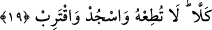

19. Hayır! Ona uyma! Allah’a secde et ve (yalnızca O’na) yaklaş!
“Hayır!” Bu ifâde yukardaki yasaklamanın ardından bir başka yasaklamayı ve
azarlamanın peşinden bir başka azarlamayı dile getirmektedir. Okuduğumuz bu “kella”
daha öncesine bitişiktir. Bundan dolayı bu kellâ üzerinde Kur’ân kırâat olunurken
mutlak vakıf ile durmuşlardır.
“Ona uyma!” Yani sen ey Muhammed bulunduğun hal üzere devam et. O yalancı, o
günahkar, yasaklayıcıya karşı gelmene devam et. Bu ifâde tıpkı “ve la tuti’ el
mükezzibiyn/o halde yalan sayanlara boyun eğme!” (Kalem, 68/8) âyet-i kerimesine
benzemektedir.
“Allah’a secde et” ve bu secdene, namazına onların sözlerine aldırmaksızın “devam
et” (yine ve yaklaş) yâni bu secdelerinle Rabbine yaklaş. Nitekim bir hadis-i şerifte
secde hâlinde Allah’a yaklaşılacağını şu şekilde görüyoruz: “Bir kulun rabbine en
yakın olduğu an, secde hâlinde olduğu andır. O halde secde hâlinde Allah’a çok duâ
ediniz” [173] Fütûhât’ta buna kurbiyyet secdesi denilmiştir.
Bu son âyet İmam Malik hariç diğer üç mezheb imamına göre secde mahallidir. Tabi
okunan âyetlere secde yapmanın vacib mi yoksa sünnet mi olduğu noktasındaki temel
kuralları değişmemekle birlikte üç mezhebin imamına göre burada secde vardır.
Öte yandan secdeler riyâset hicabının izale edilip, ortadan kaldırıldığına işâret
etmektedir. Bir hadis-i şerifte şöyle buyurulur: “Secdelerle birlikte hiçbir kibir
bulunmaz”
Kim secde ederse kibirden uzak olur ve Allah’ın dergâhında mütevazıların sâhip
olduğu şerefe erişir.
Rivâyet olunur ki Hz. İbrahim (a.s.) bir gün ikiyüz mecusiyi misâfir eder. Mecusiler
yemeklerini bitirdiklerinde; “emret yapalım ey İbrahim!” derler. Hz. İbrahim: “Benim
sizden bir dileğim var” der. Misâfirler: “Nedir dileğin?” deyince Hz. İbrahim:
“Rabbime bir tek secdede bulunun” der. Mecusiler kendi aralarında görüş alışverişinde
bulunur ve sonunda derler ki: Bu adam bize çok iyilik yaptı. Şimdi biz onun Rabbine
secde etsek, sonra ilahlarımıza geri dönsek. Bu bize hiç zarar vermez. Bu görüş üzerine
hep birlikte secdeye kapanırlar, alınlarını yere koyduklarında Hz. İbrahim (a.s.)
Rabbine yönelerek şöyle duâ eder: “Ya Rabbi! elimden gelen bütün gücümü harcadım
ve sonunda onları bu secdeye mecbur ettim. Artık bundan başkasına gücüm kalmadı.
Bütün tevfik ve hidâyet senin elindedir. Bunların kalplerini İslâm’la süsle.” Adamlar
başlarını secdeden kaldırınca müslüman olurlar.
Secdenin, namaz, tilavet, sehv secdesi gibi kısımları vardır. Allah Teâlâ’nın celal ve
kibriyası için ta’zim secdesi yapılır. Yine korku ve istek dolayısıyla Allah’a yakarma
secdesi vardır. Bir de Allah’a şükür ve yakarma secdesi vardır. Bu secdeler sahih olan
görüşe göre müstehabtır. Bunları melekler, Peygamber Efendimiz, diğer peygamberler